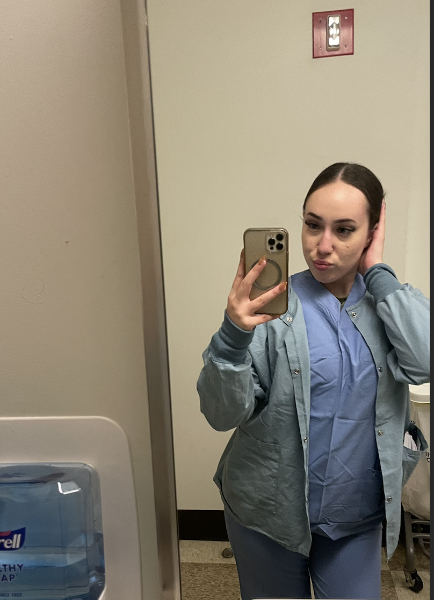

Get to Know Jazlynn
About Me
I am a senior Biology major with an Information Technology minor at the University of Massachusetts Amherst.

My Interests
I study how biology, technology, and health intersect. I conduct research on RNA viruses and computational genomics while gaining experience in human physiology through cardiology and neurology focused shadowing, clinical research, and teaching.
I enjoy working in environments that blend experimentation, data, and systems level thinking.
You can learn more about my professional background on my LinkedIn profile.
I would love to hear from you. Email me.